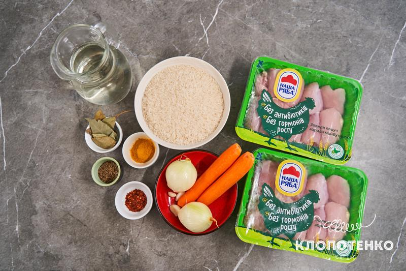
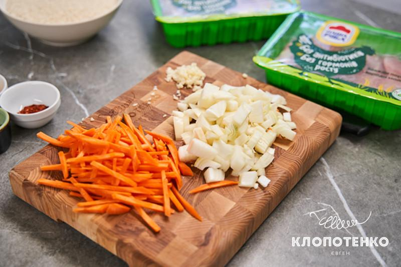
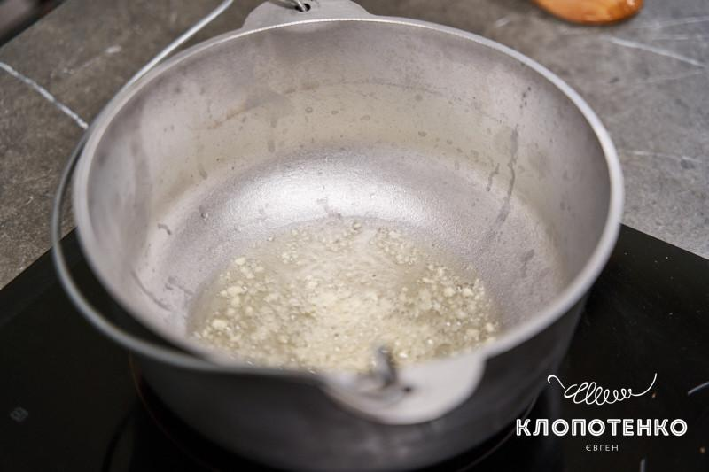
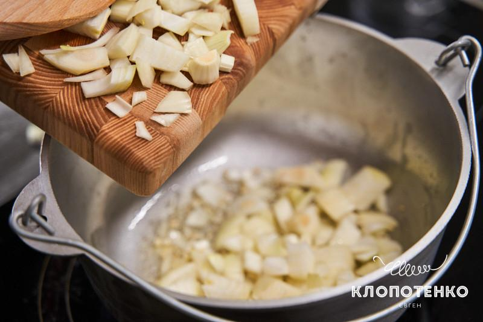
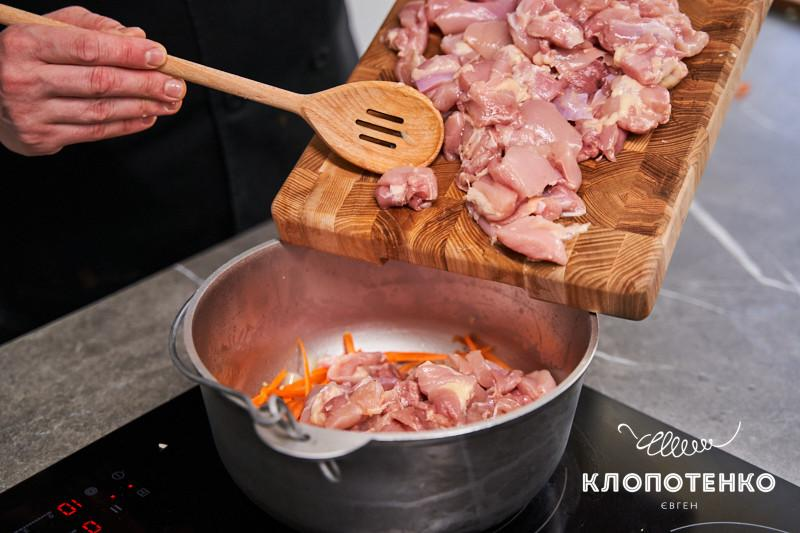
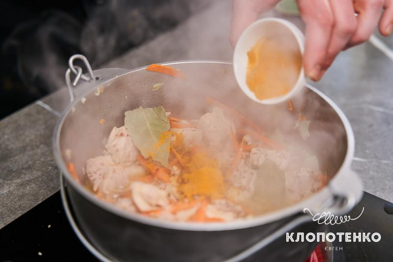
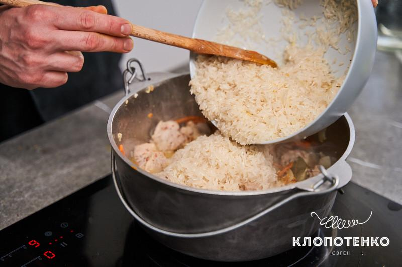
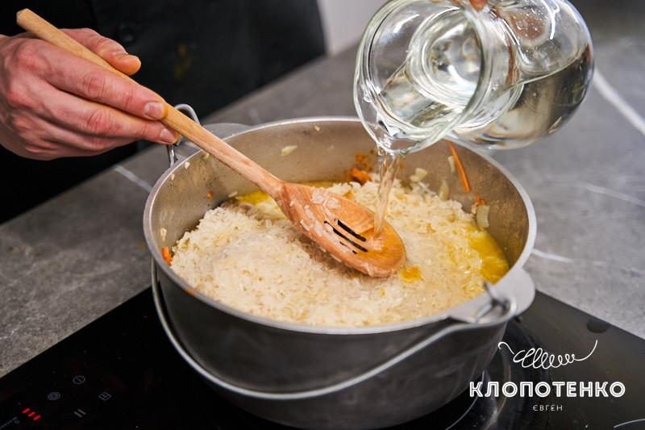
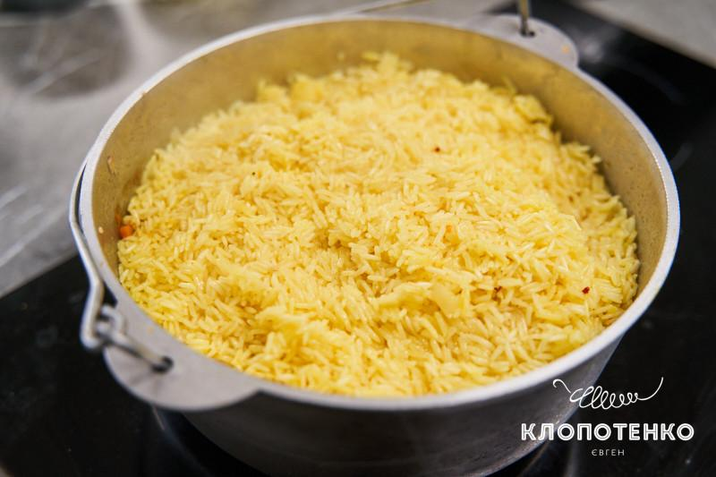
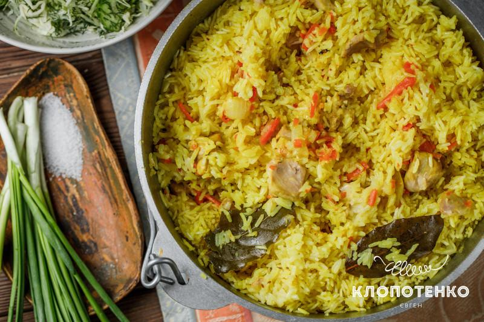

!!! В кінець рецепту !!!
Підготуйте всі інгредієнти для приготування плову з куркою.

Дрібно посічіть 3 зубчики часнику, дві ріпчасті цибулі наріжте
середнім кубиком, дві моркви – соломкою.

Налийте в казанок чи каструлю з товстим дном 100 мл соняшникової
олії, дочекайтеся, поки розігріється, перекладіть туди посічений часник.

Як почуєте приємний аромат, додайте цибулю та обсмажте 10 хвилин
до золотавого кольору, періодично помішуючи. Після цього додайте
порізану соломкою моркву. Обсмажуйте все разом ще 10 хвилин на
середньому вогні. Морква вже має стати трішки м’якою.

Для плову нам потрібен 1 кг курячого філе стегна ТМ «Наша Ряба».
Кожен шматочок розріжте на дві частини та додайте до овочів.

Всипте 1 ч. л. куркуми, 1 ч. л. кмину, додайте 2 лаврові листи та
за бажанням дрібку перцю чилі пластівцями. Посоліть 1/2 ч. л.,
перемішайте, зробіть вогонь менше середнього та обсмажуйте філе до
легкої рум’яності.

Промийте 600 г рису жасмин та додайте в казанок.

Залийте все 800 мл води та не перемішуйте. Ножем зробіть отвори, щоб
рідина розподілилася, посоліть трішки зверху, накрийте кришкою,
зробіть маленький вогонь та готуйте 40-45 хвилин.

Готовий плов перемішайте, накрийте кришкою та залиште ще на 10 хвилин,
щоб всі аромати та смаки розійшлися.

Подавайте до столу теплим з улюбленими овочевими салатами.
